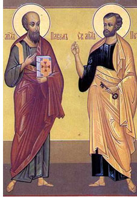

Con el paso de los años, esta festividad fue evolucionando hasta convertirse en uno de los festivales más importantes de Colombia, destacándose por el Festival Folclórico y el Reinado Nacional del Bambuco. Gracias a su riqueza cultural y artística, esta celebración se consolidó como uno de los principales símbolos de la cultura huilense y del folclor colombiano, resaltando las tradiciones, la música, la danza y las costumbres típicas de la región.
